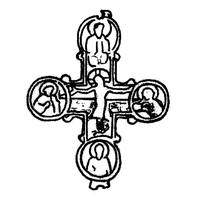

Catalog › CE-0547 · OLI-3
Valvă de encolpion cu Răstignirea și sfinți, Lisicinîki (Рис. 1, 3)
anii 30–40 ai sec. XIII (1230–1249) · Lisicinîki, regiunea Ternopil, raionul Zalișcichi, Ucraina · Muzeul raional comunal de studii locale Zalișcichi (Заліщицький районний комунальний краєзнавчий музей, ЗРККМ), inv. ЗРККМ А 1678
single valve of a reliquary cross, bronz; anii 30–40 ai c. XIII (1230–1249); found at Lisicinîki, regiunea Ternopil, raionul Zalișcichi, Ucraina; kept at Muzeul raional comunal de studii locale Zalișcichi (Заліщицький районний комунальний краєзнавчий музей, ЗРККМ).


Identificare
- Categorie
- Valvă izolată
- Material
- Bronz
- Tehnică
- Turnare în relief
- Dimensiuni
- Î 64 × L 56 mm
Iconografie
- Revers
- Sf. Ioan; Sf. Nicolae
- Descriere revers
- Imagine în relief a Răstignirii și a sfinților în patru medalioane: în dreapta Răstignirii bustul Maicii Domnului, în stânga Sf. Ioan Teologul, sus Sf. Nicolae, jos Sf. Grigore.
Datare și atribuire
- Datare
- anii 30–40 ai sec. XIII (1230–1249)
Descoperire
- Localitate
- Lisicinîki
- Regiune
- regiunea Ternopil, raionul Zalișcichi
- Țară
- Ucraina
- Context
- Așezare
- Anul
- 1972
- Coordonate
- 48.6934° N, 25.8478° E
- Precizia locului
- Doar localitatea
Păstrare și referințe
- Colecție
- Muzeul raional comunal de studii locale Zalișcichi (Заліщицький районний комунальний краєзнавчий музей, ЗРККМ)
- Nr. inventar
- ЗРККМ А 1678
- Bibliografie
- В. Олійник, В. Олійник, Знахідки давньоруських енколпіонів на півдні Тернопільщини, în „Матеріали і дослідження з археології Прикарпаття і Волині”, 12, 2008, p. 390–392 [Олійник, Олійник 2008], p. 390, Рис. 1, 3, reprodusă la Рис. 1, 3 (p. 391).
- Figura
- Рис. 1, 3
- Planșe
- Олійник, Олійник 2008, p. 391
- Analogii
- Tip de cruci-encolpion foarte răspândit în pământurile rusești și dincolo de ele (Пивоваров 2001, p. 73); piese similare la Kiev (Пекарська, Пуцко 1989, p. 91), Halici (Пастернак 1998, p. 233), Zelenche (Корзухина, Пескова 2003, p. 198). Identificarea medalioanelor după Корзухина, Пескова 2003, p. 195, 100.
- Observații
- Valva din spate a unui encolpion, găsită în 1972 în centrul satului Lisicinîki, lângă magazin, de Ivan Oliinyk, la desfacerea unui zid vechi de piatră. Dimensiuni 6,4×5,6 cm fără ureche. Sf. Grigore nu figurează în lista de icoane a bazei. Coordonate: ale localității (aproximative), nu date în sursă.
Citare: Corpus Encolpiorum, CE-0547, Valvă de encolpion cu Răstignirea și sfinți, Lisicinîki (Рис. 1, 3), --root/piese/OLI-3/ (accesat 2026-10-17).